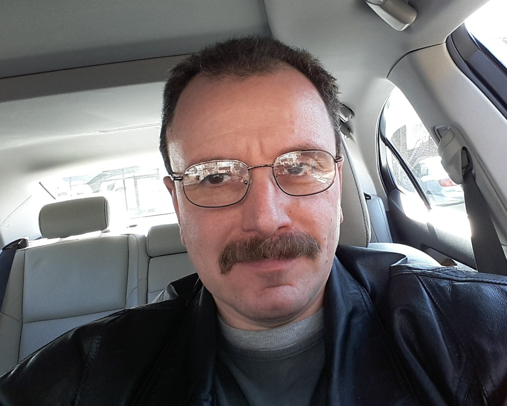

My Story
Below here some of the milestones from my personal biography.
- 1968 - Born in Riga, Latvia. Some may say that I am an old guy, but as long as I feel young I don't care :)
- Started elementary school at the age of 7. Graduated from a high school ten years later. It was ten years of schooling at that time under Soviet rules.
- Studied at Riga Polytechnical Institute (somewhat equivalent to University in the US) with a major in "Automation of Thermal-power Processes" That's the best translation from Russian that I can come up with... Finished about two years of undergraduate school out of four required, did not graduate.
- 1989 - At the end of this year left Latvia for the United States. Just an interesting historical fact: I left Latvia on a day the Berlin wall came down in Germany. Spent few months in Euorope going through the immigration process in order to enter the US. And then arrived to the United States as a legal immigrant. Live in Chicago area ever since.
- I was admitted to DeVry University in Chicago after I had worked some part time jobs for almost two years. In four years graduated with a Bachelor of Science in Electronics Engineering Technology EET.
- 1996-2010 - During these years employed by Lucent Technologies Inc. and then Alcatel-Lucent as Telecom Equipment Engineer and Technical Support Engineer.
- 2012-2013 - A year long contract with Goodman Networks as a Network Design engineer supporting integration of wireless network components at customer's sites.
- 2013 - Present - I have tried all kind of jobs, none of them transformed into a new career or business until I discovered a ridesharing business and became a driver as I am today.
- Me Today - The things I like these days are: working out in a gym, driving is one of the reasons I am in ridesharing business. I do like riding bicycle too but no time for it, interested in politics but it is really nasty these days. Love animals. We have a dog and a turtle. A new hobby coding, so I build this web site :))

"Feels like I am always part of my car or the other way around"